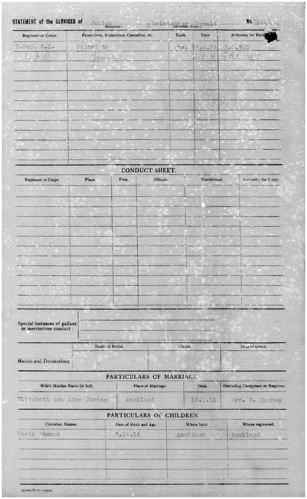

Christopher Gerald Jordan 1891 - 1965
[ Home ] | [ Calendar ] | [ Surnames Index ] | [ Census Index ] | [ Family History ]The child of James Jordan (a horse keeper) and Julia Culmer, Christopher Jordan, the second cousin twice-removed on the mother's side of Nigel Horne, was born in Faversham, Kent, England on Feb 18, 18911, was baptized there on Mar 20, 1891 and married Elizabeth Moore (with whom he had 1 child, Chris Edouard) in New Zealand in 19163.
During his life, he was living at 2 Mill Place in Faversham on Apr 5, 18915 and on Mar 31, 19016; and at 20 Hutchinson Avenue, New Lynn, Auckland, New Zealand in 19284. In 1937 he traveled from Honolulu, Hawaii, USA to Vancouver, British Columbia, Canada, departing on 14 Jul, arriving later that same year. On Jul 17, 1917 he was serving in the military (service Number: WW1 76452).
He died on Nov 23, 1965 in Auckland, Auckland, New Zealand2 and was buried there at Waikumete Cemetery after Nov 23, 1965.
Parents
- James was born on Jan 16, 1854
- Julia was born on Apr 17, 1852
Children
- Chris Edouard was born on Dec 7, 1916
Citations
- England & Wales births 1837-2006 - Findmypast
- New Zealand Death Index - Findmypast
- New Zealand, Marriage Index, 1840-1934
- New Zealand, Electoral Rolls, 1853-1981
- 1891 England, Wales & Scotland Census - Findmypast (was age 0 and the son of the head of the household)
- 1901 England, Wales & Scotland Census - Findmypast (was age 10 and the son of the head of the household)
Media
WWI 1
WWI 2
WWI 3
WWI 4

WWI 5

WWI 6

WWI 7

WWI 8

WWI 9

WWI 10
WWI 11

WWI 12

WWI 13

WWI 14

WWI 15

WWI 16

Christopher Jordon - Military Record
Christopher Jordon - Military Record 2

Christopher Jordon - Military Record 3

Christopher Jordon - Military Record 4

Christopher Jordon - Military Record 8
Christopher Jordon - Military Record 6

Christopher Jordon - Military Record 7

Christopher Jordon - Military Record 8
England & Wales births 1837-2006 - BMD/B/1891/2/AZ/000342/257
1891 England, Wales & Scotland Census - GBC/1891/0005793053
1901 England, Wales & Scotland Census - GBC/1901/0006632161
New Zealand death index - ANZ/NZBMD/D/0401329
New South Wales Passenger Lists Transcription - ANZ-NSW-PASS-UNASST-05837079
New South Wales Passenger Lists Transcription - ANZ-NSW-PASS-UNASST-07982159
England, Births & Baptisms 1538-1975 Transcription - R_885854844
Britain, merchant seamen, 1918-1941 Transcription - TNA-BT349-2130547769-1
Britain, merchant seamen, 1918-1941 Transcription - TNA-BT348-2130207255-1
Family Tree

Generated by ged2site. Last updated on Jun 11, 2024